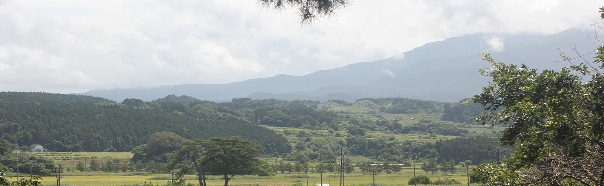
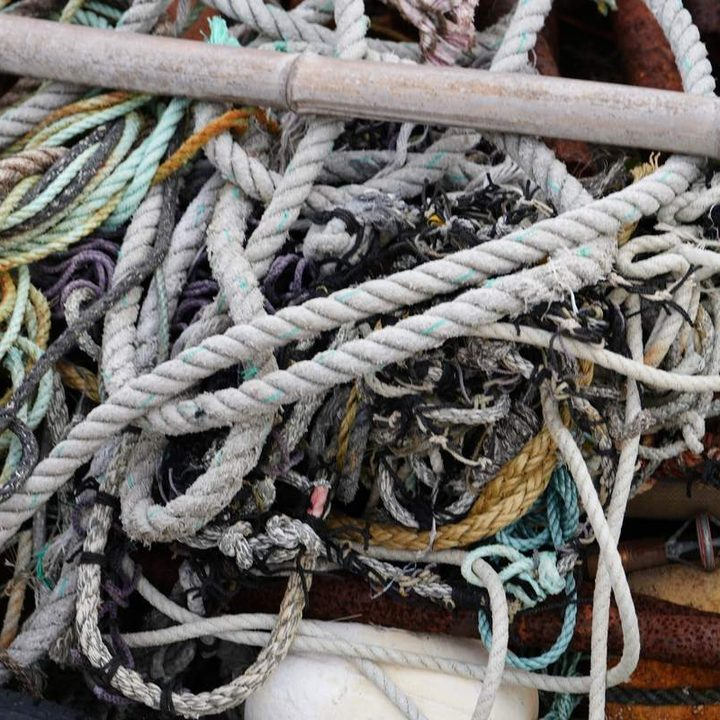
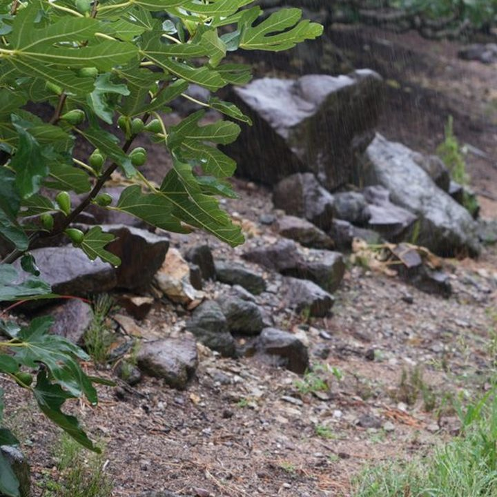
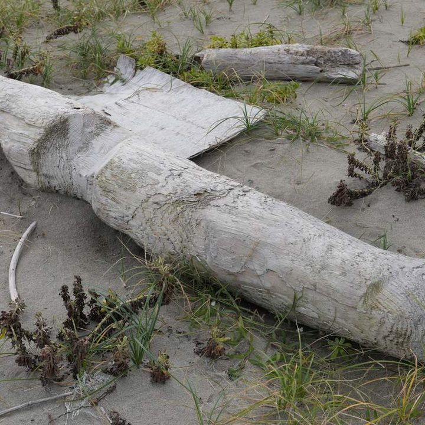
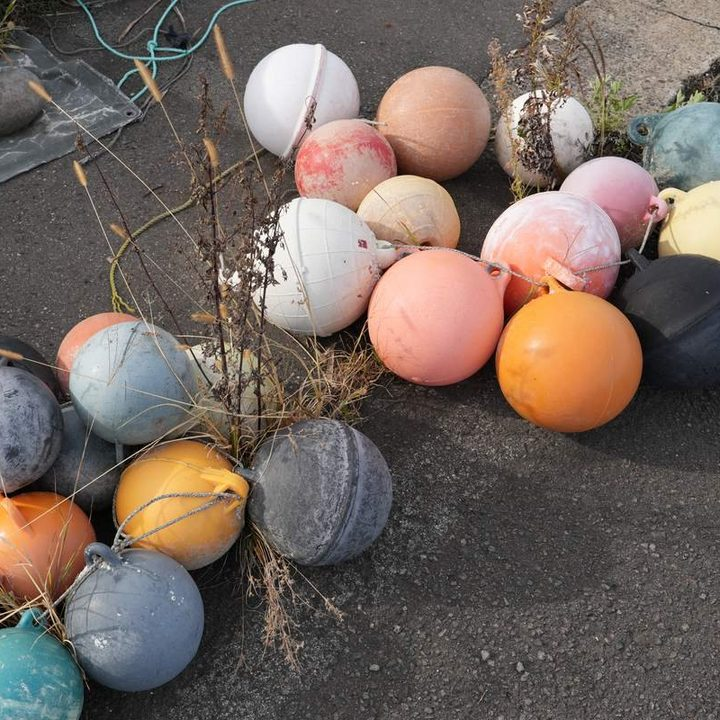
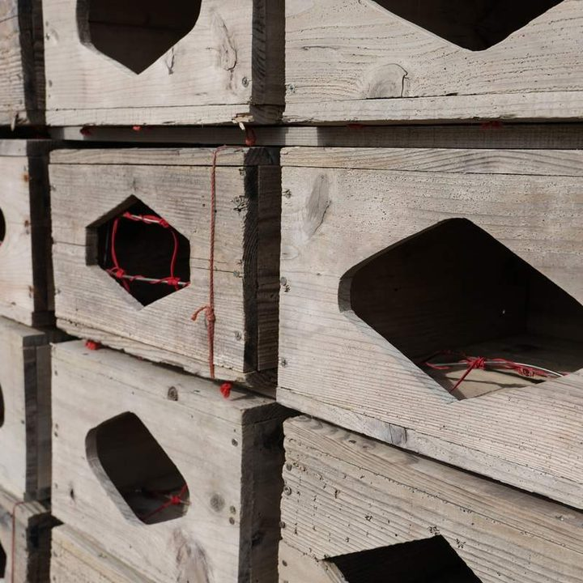

山
手本 — 平沢漁港のロープ
藁縄で、写す
象潟の稲わらを三つ撚りに綯い、絵具で化繊の色と艶に。
毛羽の質 艶 撚りの細かさ

NIKAHO ART PROJECT 2026 — にかほ芸術登竜紋
天井から降る、約3,000本の糸。
にかほの物語「九十九の礫」のなかを歩くうちに、
なにが本物か、わからなくなる。
12.14 MON — 12.19 SAT12.20 SUN 答え合わせ ／ 秋田県にかほ市
山が崩れ、海に島が生まれた。
その物語を、ひとつの部屋に。
秋田県にかほ市。鳥海山の山体崩壊と、象潟・九十九島の記憶をもとに書かれた物語「九十九の礫」から生まれるインスタレーションです。にかほで拾ったものと、それに擬してつくったもの、そして降りそそぐ糸で、ひとつの部屋をつくります。

THE ROOM — 完成イメージ
01 — ENTER糸の帳の向こうに、
部屋がある。
02 — PART肩で糸を分けながら、
なかへ。
03 — FIND足もとに、島と浮き球が
あらわれては、隠れる。
天井の格子から、約3,000本の麻糸が、床の少し上までまっすぐに降りています。一本ずつ手で結び、色を塗った糸です。
奥の壁崩れる前の山の、深い藍
窓・手前光と雪、そして海の浅葱
糸の先 — 床から約30cm。かつての潟の水面
糸は、鳥海山の山体崩壊をイメージした色で塗ります。部屋の奥の深い藍は、崩れる前の山。手前へ進むほど葡萄、紅、撫子と明るくなり、窓ぎわは光と雪、そして海の浅葱へ。山が崩れて海へ流れた順に、色が並びます。
冬のにかほは曇りや雪の日が多く、雲の切れ目で光が数分ごとに変わります。1689年、松尾芭蕉は雨の象潟を「象潟や雨に西施がねぶの花」と詠みました。窓の光が移ろうたびに、糸の色も変わります。
約3,000本の糸の先は、床から約30cmの高さでそろえます。その見えない水平は、1804年の象潟地震で一夜にして消えた、潟の水面。床の島や浮き球は、水の下に沈んだ島のように、見えたり隠れたりします。
〈いと〉は、物語のいちばん小さな単位のこと。目には見えない〈いと〉を、手でかきわけられるかたちにしたのが、この麻糸です。だから糸には番号をつけず、九十九のどれにも数えません。
物語「九十九の礫」は、物語集『にかほの神話と伝承』の一篇です。この本は、作家が土地の記録と聞き取りをもとに書いた、郷土の本のすがたをした創作。けれど、その舞台は、いまもにかほで実際に歩くことができます。
むかし、お山（鳥海山）はいまよりずっと背が高く、すぐそばの海に、一度もさわったことがありませんでした。お山の願いは、「ただ一度でいいから、海にさわってみたい」。
ある雪の多い年の夜、お山は北の肩をみずから崩し、岩と土と森が、海へ駆けおりていきました。
お山はそうまでして、
はじめて海にさわったのでした。
夜が明けると、海には数えきれないほどの小さな島が浮かんでいました。島を数えはじめた娘キサは、九十九まで数えたところで、それ以上、数えられなくなりました。
九十九というのは、
数えきれないという意味なのだそうです。
海は礫を抱いて、浅い潟をつくりました。二千三百年ののち、大地が揺れて潟の水が消えると、島々は乾いた泥の上に残されました。いまも田んぼの中に、小さな森をのせた小山として、点々と残っています。
春、田に水が張られると、ほんのひとときだけ、島々はふたたび水の上に浮かびます。
引用はすべて、物語「九十九の礫」（『にかほの神話と伝承』所収）より。物語集と編者「にかほ研究会」は、作家による創作です。
鳥海山の山頂部が、大きく崩れる。岩屑なだれは約16km先の海まで流れこみ、海に入った岩塊が、無数の小島「流れ山」になった。
松尾芭蕉が象潟を訪れる。雨にけむる入り江と島々を、「象潟や雨に西施がねぶの花」と詠んだ。
象潟地震。海底が約2m隆起し、潟は一夜で陸に。田が開かれ、多くの島が崩された。
残った島々が、国の天然記念物に。
追加指定で、105島を数える。九十九より、多い。いまも島は、数えるたびに増えている。


番号をつけた、部屋の要素
そのうち、本物そっくりにつくった〈擬態〉
鳥海山が崩れた（約）
崩れた山が、海まで流れた距離（約）

現実が、
擬態なのではないか。
すべてが、
擬態なのではないか。
MIRROR — 反転
春、田に水が張られると、ほんのひとときだけ、
島々はふたたび水の上に浮かびます。— 物語「九十九の礫」より
水に映った島と、ほんとうの島。
どちらが、どちらを写しているのだろう。
山は崩れて島のふりをし、島は田に残って丘のふりをする。
世界は、ずっと擬態をつづけている。
部屋の九十九のうち九つは、にかほの土や砂鉄、藁、紙で、本物そっくりにつくった〈擬態〉です。けれど、見てほしいのは九つを見破る瞬間ではありません。一つを疑ったとき、ほかの本物まで、そして部屋の外の風景まで、つくりものに見えはじめる。その揺らぎです。

平沢漁港 — 2026.10.04使われなくなった浮き球。
ここにあるのは、ぜんぶ本物。
もしもこのなかに一つ、
陶でつくった擬態が
まじっていたら。
ひとつ疑うととなりの球も、
そのとなりも、あやしい。
球だけでなく石も、袋も、草も、
アスファルトのひびも。
部屋を出たあとで帰り道の港が、
まるごと、つくりものに見える。
Blend九十九に、九つが紛れる
拾う 88 ＋ 作品 2 ＋ 擬する 9にかほで拾い、借り、譲り受けた本物が88。作家の作品が2。そして、それに似せてつくった擬態が9。
Reverse気づいた目が、反転する




反転一つ気づくと、手本まで疑わしく見えはじめる。
生きものの擬態（ミミクリ）は、手本・擬態・見る人の三者で成り立ちます。この部屋では、見る人が一つ気づいた瞬間に矢印が逆を向き、本物の石やロープの側が「つくられたもの」に見えはじめます。※ 擬態は制作中です。図は考え方を示すもので、写真はどちらも手本（本物）です。
Copyにかほの本物を、にかほの土で写す
土・砂鉄・藁・紙。擬態の素材も、この土地から。目標は「似ている」ではなく、本物と並べて見分けがつかないこと。写真の上でカーソルや指を動かすと、ルーペで見られます。
手本 — 平沢漁港のロープ
象潟の稲わらを三つ撚りに綯い、絵具で化繊の色と艶に。
毛羽の質 艶 撚りの細かさ
手本 — 大竹の畑の縁石
浜の砂鉄と田の泥を練りこみ、重さと冷たさまで石に合わせる。
叩いた音 冷たさ 重さ
手本 — 白雪川河口の流木
十文字和紙を8〜10層。胡粉と墨で、さらされた木肌に。
軽さ 叩いた音
手本 — 平沢漁港の浮き球
浮き球から型をとり、本物と同じ日に、同じ絵具で塗る。
転がり方 当たる音

港手本 — 漁港の木箱か、パレット
素材も、つくり方も、12月20日まで明かしません。
—
Count数えることは、入口にすぎない
九十九を数え、
九つを見破ろうとする。
その手つきのまま、
部屋の奥へ、迷いこむ。
出口では、擬態だと思う番号を書く「見立て用紙」を受け取れます。書かなくてもかまいません。答えは封筒に入れて事務局が預かり、12月20日のトークで開けます。
番号は、山が崩れて海へ流れた順（01 奥の壁 → ロープ → 島 → 床 → 流木 → 浮き球 → 港 → 99 映像）。縦の線は、番号のない糸。
番号にふれると、それが何かが、ここに出ます。
九十九の礫 答え
あなたの見立て
12.20 SUN トークで開封 — にかほっと
封この画面は練習です。番号と群の並びは計画（予定）にもとづくもので、どれが擬態かは、ここにも書いていません。選んだ番号は、この端末にだけ残ります。
壁に映る、にかほの風景
肩で糸を分けて、進む
窓の光で、糸の色が変わる
床には島と浮き球。動かしても大丈夫
糸は部屋いっぱいに降っています。急ぐことはできません。歩みは自然と、ゆっくりになります。
一歩ごとに、足もとの島や浮き球が見えたり、隠れたり。振り返ると、もう見えません。
動いてしまった床のものは、閉室後に元の場所へ。毎日すこしずつ、ちがう部屋になります。

漁港の浮き球、ロープ、河口の流木、浜の丸い石、田の泥。山が崩れて残したものと、この土地で人が使い古してきたものを、借りたり、譲ってもらったりして、部屋へ運びます。
どこで出会ったかは、踏査記録へ ↗


FIELD NOTES別ページ ↗
物語も、部屋に置く素材も、すべてこの踏査から始まりました。2026年8月26日から28日、象潟・金浦・仁賀保の3地区を歩き、寺や神社、資料館、漁港、湧き水、油田の跡をたずねた記録です。
踏査記録のページを開く→靴のまま、糸のあいだを歩けます。部屋のまわりの通路からも見られます。時間などの詳細は、決まりしだいお知らせします。
九十九まで数えたところで、
どうしてもそれ以上
数えられなくなりました。— 物語「九十九の礫」より
九つの擬態が明かされても、
のこりの九十が本物だと、言い切れるだろうか。


.jpg)